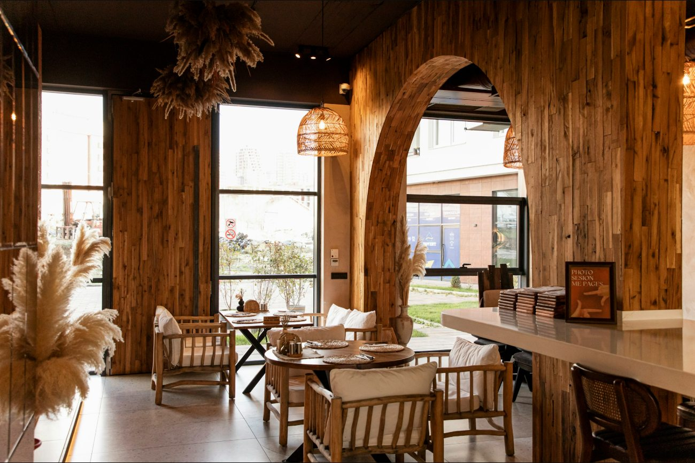
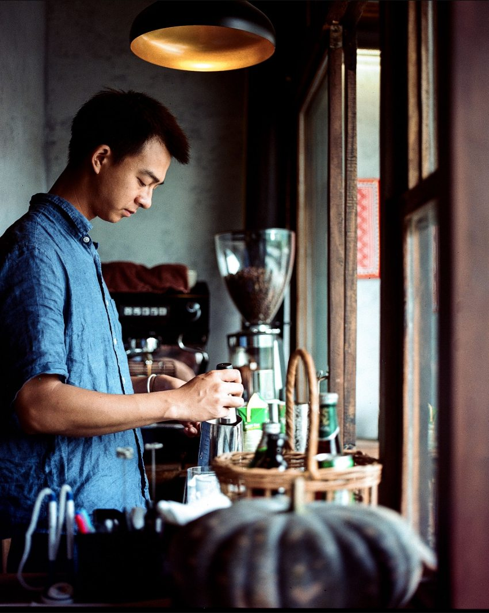
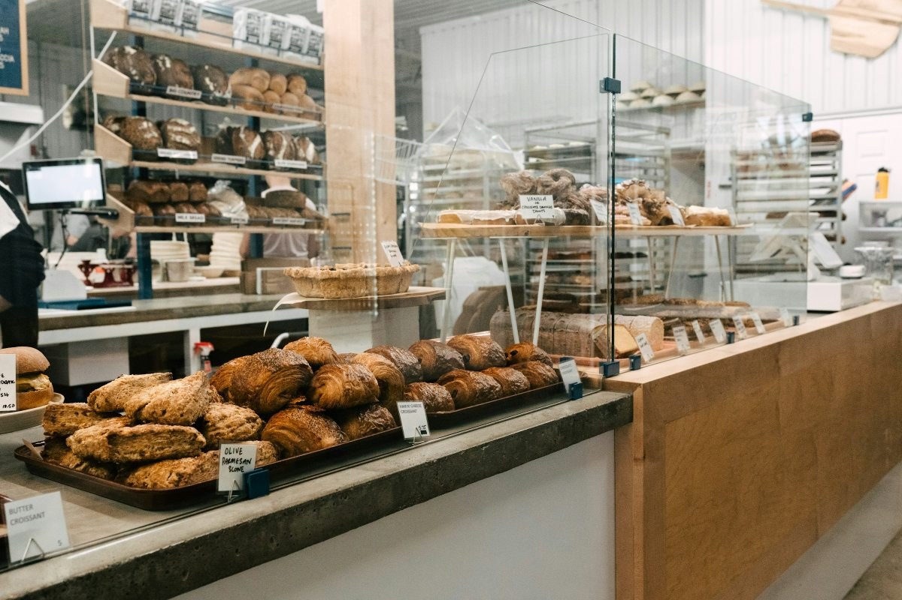
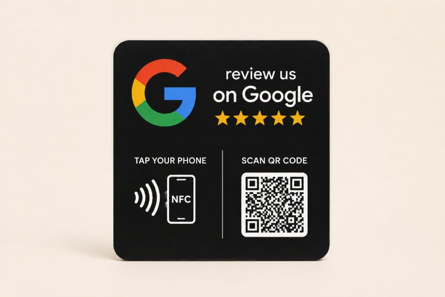

On fait connaissance.
On regarde votre fiche. Vous nous parlez de votre établissement, de ce qui fonctionne et de ce que vous aimeriez améliorer.
Agence de fiches Google
Haute-Savoie & Genevois
Votre adresse a quelque chose de spécial.
Une belle adresse mérite
une présence à sa hauteur.
On prend soin de votre fiche Google.
Vous prenez soin de vos clients.

Donnez envie
de pousser votre porte.


Café · €€
Une adresse au cœur de votre quartier
Ouvert · Ferme à 18:00 ⌄
Café de spécialité · Sur place · À emporter
Un café, une pause et une bonne raison de revenir.
★★★★★ Il y a 2 semaines
Un accueil attentionné, un très bon café et un endroit où l’on se sent bien.
Merci Camille ! Au plaisir de vous accueillir à nouveau.
Photos d’illustration · établissement fictif
Le premier contact
se joue souvent ici.
Une photo qui donne envie. Des horaires qui rassurent. Des avis qui reçoivent une vraie réponse. Sur Google, ces détails racontent déjà quelque chose de vous.
Notre rôle : faire en sorte que votre fiche reflète le soin que vous apportez à votre établissement.
Le savoir-faire OKKO
Catégories, services, description, horaires et coordonnées : les bonnes informations, au bon endroit. Une fiche complète qui explique clairement ce que vous proposez.
Faciliter la demande d’avis authentiques et préparer des réponses adaptées. Chaque client reste libre de sa note et de son commentaire.
Des photos qui montrent votre lieu, des actualités utiles, des changements d’horaires anticipés. Votre fiche évolue avec votre activité, au rythme convenu.
Un point lisible sur les actions réalisées et les indicateurs disponibles : consultations, clics d’appel, itinéraires et visites vers votre site.
Une seule spécialité. Toute notre attention.
Votre fiche Google.
Entre de bonnes mains.
Pas besoin d’en faire plus partout.
Commençons par soigner l’endroit où l’on vous cherche.
L’accompagnement
On regarde votre fiche. Vous nous parlez de votre établissement, de ce qui fonctionne et de ce que vous aimeriez améliorer.
Nous proposons les corrections utiles et un devis précis. Vous savez ce qui sera fait et vous validez avant toute intervention.
Nous actualisons votre fiche et faisons le point sur les actions et les indicateurs, selon l’accompagnement choisi.
Votre fiche reste la vôtre. Vous conservez la propriété et les accès ; nous intervenons comme gestionnaire.
Les lieux qu’on aime
méritent d’être trouvés.
Le geste qui simplifie les avis
Votre client approche son téléphone ou scanne le QR code. Il rejoint votre page d’avis et partage librement son expérience.
Le support NFC est un complément. Notre travail reste de prendre soin de votre fiche, dans son ensemble.
Sans application dédiée. Un compte Google est nécessaire pour publier un avis.

Une agence d’ici.
Basée à Savigny, en Haute-Savoie, OKKO accompagne les établissements locaux sur Google. Une agence indépendante, une spécialité assumée et des échanges directs.
Comprendre votre activité. Soigner votre présence. Vous expliquer ce qui a été fait. Simplement.
Savigny · Haute-Savoie · GenevoisAvant de commencer
Oui. Nous commençons par regarder son état et vos accès. Si vous en êtes propriétaire, vous pouvez nous inviter comme gestionnaire. Si vous n’avez plus les accès, nous examinons la procédure de récupération adaptée.
La fiche Google est gratuite. Vous payez le travail d’OKKO : diagnostic, optimisation, mises à jour, accompagnement des avis et suivi. Le périmètre est précisé dans votre devis.
Non. Le classement dépend notamment de la pertinence, de la distance et de la notoriété. Nous travaillons les éléments de votre fiche sur lesquels nous pouvons agir, sans promettre une position ou un nombre de clients.
Nous regardons votre fiche et le travail nécessaire avant de vous proposer un devis. La remise à niveau initiale et le suivi sont précisés séparément, avec leur contenu, leur rythme et leurs conditions.
Non. La plaque est un complément pour faciliter la demande d’avis. La gestion de votre fiche est au cœur de notre accompagnement. Nous choisissons les outils en fonction de votre établissement.
Un avis négatif ne peut pas être supprimé simplement parce qu’il déplaît. Nous vous aidons à y répondre et à signaler les avis qui enfreignent les règles de Google. La décision de retrait appartient à Google.
Tout commence par un échange.
Quel établissement gérez-vous ?
Qu’aimeriez-vous améliorer ?
On part de votre situation.